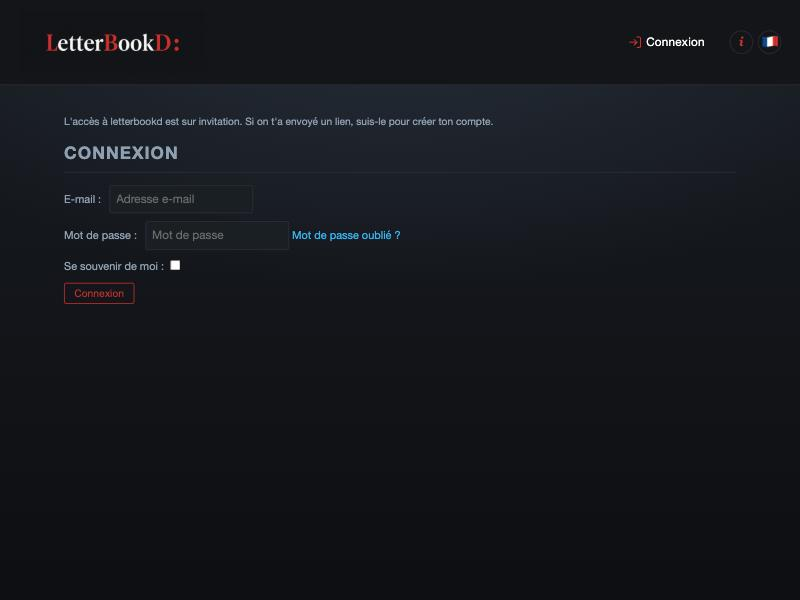

Connexion
À quoi ça sert : Entrer dans ton club. letterbookd est privé : l'accès se fait par lien d'invitation. Si on t'a envoyé un lien, suis-le ; sinon, utilise cette page pour reprendre ta session.

Parcours
Tu arrives ici si tu n'es pas connecté, ou en cliquant sur 'Connexion' en haut à droite. Remplis l'adresse e-mail de ton compte et ton mot de passe, puis clique 'Connexion'. Tu peux cocher 'Se souvenir de moi' pour rester connecté sur ce navigateur. Un lien 'Mot de passe oublié ?' envoie un e-mail de réinitialisation ; tu reviens ici avec un nouveau mot de passe. Après connexion, tu atterris sur l'accueil.
Chaînes d'action
Chaque ligne décrit un déclencheur dans l'interface, ce qu'il ouvre (modal ou formulaire), et l'effet produit.
| Déclencheur | Modal / Champs | Effet |
|---|---|---|
| Bouton 'Connexion' (formulaire principal) | E-mail (obligatoire), Mot de passe (obligatoire), Se souvenir de moi (case à cocher, optionnelle) | Session ouverte, redirection vers l'accueil. En cas d'erreur, le formulaire se recharge avec un message explicite (adresse inconnue, mot de passe incorrect). |
| Lien 'Mot de passe oublié ?' | Formulaire de demande par e-mail (page séparée) | Un lien de réinitialisation est envoyé à l'adresse saisie. Suis le lien, choisis un nouveau mot de passe, et reconnecte-toi. |